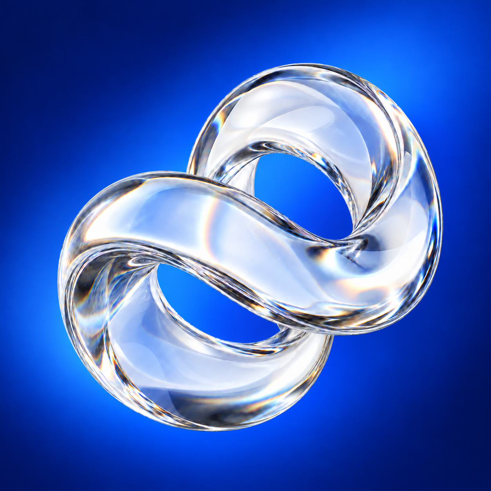

Blu profondo.
Luce, con misura.
Una base minimale ricavata dall’icona: blu per l’identità, ghiaccio per la luce, superfici tranquille per l’interfaccia.

Colori di base
#00115Bblue-950#123BB5blue-700 · azioni#0450EFblue-600#1674FBblue-400 · accento#E1EBFDice-100#F5F8FFwhiteNotte, Luce e Ghiaccio riprendono campioni dell’immagine. Cobalto, Elettrico e i neutri UI sono armonizzati per l’uso digitale.
Tre gradienti, tre ruoli
--vetro-gradient-brandIcona, copertine, momenti di identità.--vetro-gradient-blueAccenti compatti, senza testo piccolo.--vetro-gradient-glassRiflesso discreto sopra una superficie.Semantica: scuro e chiaro
Una superficie, un’azione.
Testo primario e secondario leggibili, bordo sottile, un solo blu operativo.
La stessa gerarchia.
I componenti usano gli stessi nomi: cambiano soltanto i valori del tema.
Ritmo e materia
Font di sistema · pesi 400 / 500
Scala: 14 / 16 / 24 / 40 px
Interlinea: 1,5 testo · 1,15 titoli
Spazi: 4 / 8 / 12 / 16 / 24 / 32 / 48 px
Raggi: 8 px controlli · 16 px superfici
Controlli: altezza minima 44 px
Movimento: 120 / 200 ms · decelerazione morbida
Focus: anello 2 px, distanza 3 px
Vetro: blur 16 px, con fondo opaco di riserva
Usare l’effetto vetro solo per piccoli overlay. La superficie piena garantisce leggibilità anche senza blur. I token di movimento rispettano le preferenze di movimento ridotto.
Uso
<link rel="stylesheet" href="design-system/tokens.css">
.panel {
background: var(--vetro-surface);
color: var(--vetro-text);
padding: var(--vetro-space-6);
border: 1px solid var(--vetro-border);
border-radius: var(--vetro-radius-surface);
}
/* Tema chiaro: data-vetro-theme="light" sul contenitore. */- Circa l’80% della UI resta neutro; il blu identifica azioni e selezioni.
- Usare testo chiaro sul Cobalto; riservare Luce a dettagli e gradienti.
- Sui gradienti, collocare il testo in una superficie piena: il contrasto varia lungo il fondo.
- I colori di stato funzionali vanno definiti separatamente: il blu non significa successo o errore.